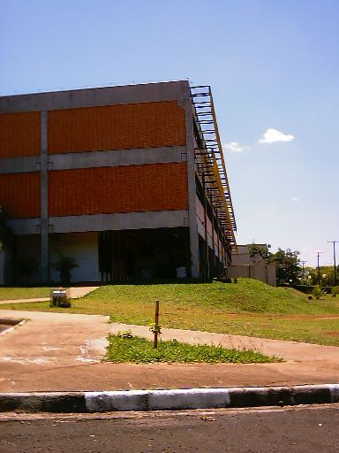

Nesta
Quinta-feira, mais 17 mudas foram plantadas!
O plantio foi
feito no campus da Universidade Federal de São Carlos (UFSCar),
defronte ao Departamento de Matemática (DM).
As mudas plantadas, das espécies
Algodoeiro (Paineira do Cerrado) e Oiti,
estavam abandonadas ao lado da Biblioteca Universitária.
Elas foram imediatamente aproveitadas pelo Projeto Plante a Vida!
e pela Associação de Amigos e Moradores dos Jardins (AMOR).
A AMOR plantou
aproximadamente 150 mudas nas margens de um dos córregos
que cortam o bairro Cidade Jardim, em São Carlos.
Veja as fotos das árvores
plantadas na UFSCar:
 |
O plantio
é iniciado com uma muda de Oiti, ao lado da
Biblioteca Universitária. |
|
Logo após, são
plantadas mais quatro mudas;
Duas de Algodoeiro e duas de Oiti,
em frente ao prédio do Departamento de Matemática.
Ao lado das mudas, Alexandre. |
|
Aqui
vemos uma foto que mostra o estacionamento lateral
da Biblioteca Universitária, com várias mudas de árvores
já plantadas pela Prefeitura Universitária. |
|
Aqui
podemos ver algumas das mudas
plantadas defronte ao prédio do Departamento de Matemática. |
|
Não
podíamos deixar de fotografar a nossa amiga, a Coruja Buraqueira,
que têm o seu ninho, há muito tempo, ao lado do prédio do DM. |
|
Aqui,
mais uma preciosidade. Um pé nativo de Angico
que está neste local desde a fundação da UFSCar
e foi preservado pela Prefeitura Universitária. |
|
Danilo
posa ao lado de uma das mudas de Algodoeiro plantadas;
Esta, localizada defronte ao Departamento de Matemática. |
Este plantio foi muito
interessante pois foi feito dentro da Universidade Federal de São Carlos,
local que, mesmo cuidado pela Prefeitura Universitária, ainda possui muitos lugares
onde é possível o plantio de árvores.
Esperamos conseguir a ajuda dos
alunos da UFSCar para, futuramente,
ampliar o plantio de mudas dentro do campus.
Ajude-nos! Faça sua
parte!
Plante a Vida! :)
|